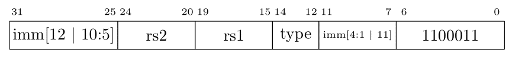

Course (taught and being teached) >>> Current Semester >>> 2022-3B >>> מבוא לארכיטקטורת מחשבים >>> >>> 2022-07-21 >>> קפיצות מותנות
עד עכשיו בסיום כל פקודה היינו ממשיכים לפקודה העוקבת בזכרון. כמובן שכדי להריץ תוכניות יש צורך בתמיכה בהשוואות וקפיצות.
פקודות המכונה שנלמד כאן בודקות אם מתקיים תנאי בין שני אוגרים. אם התנאי מתקיים אזי ממשיכים בפקודה שאינה בהכרח העוקבת. אם התנאי נכשל אז ממשיכים בפקודה העוקבת. כיון שרוחב כל פקודה הוא 32 ביטים, ברור שמרחק הקפיצה מוגבל באיזשהו אופן. כל פקודות הקפיצה המותנות שייכות למשפחת הפקודות B שצורתה: 
כלומר: אם התנאי יתקיים אז המעבד יבצע
pc += off
אחרת המעבד יבצע כרגיל
pc += 4.
סוגי ההשואות הקיימים הם הבאים:
beq rs1, rs2, off // type: 0 rs1 = rs2
bne rs1, rs2, off // type: 1 rs1 ≠ rs2
blt rs1, rs2, off // type: 4 rs1 < rs2 (signed)
bge rs1, rs2, off // type: 5 rs1 ≥ rs2 (signed)
bltu rs1, rs2, off // type: 6 rs1 < rs2 (unsigned)
bgeu rs1, rs2, off // type: 7 rs1 ≥rs2 (unsigned)
ראשית נשים לב שלכאורה חסרות השוואות.
לדוגמא אין את ההשוואה
bgt rs1, rs2.
כמובן שבמקום זאת ניתן לרשום
blt rs2, rs1.
האסמבלר בא לעזרתנו כאן על-ידי הוספת פקודות דמה, pseudo instructions.
כלומר יש לנו את האפשרות לכתוב bgt
והאסמבלר יהפוך את סדר האוגרים וייצר את הפקודה המתאימה.
bgt rs1, rs2, off ⇒ blt rs2, rs1, off
ble rs1, rs1, off ⇒ bge rs2, rs1, off
bgtu rs1, rs2, off ⇒ bltu rs2, rs1, off
bleu rs1, rs1, off ⇒ bgeu rs2, rs1, off
שנית נשים לב שבפקודה יש את המרחק אל היעד ולא את הכתובת המוחלטת שאליה רוצים להגיע. משתמשים בשיטה זו משלוש סיבות.
מרבית הקפיצות המותנות הן למרחק קטן יחסית, כך שצריך מעט ביטים כדי לאחסן את המרחק. זאת בניגוד לכתובת מוחלטת שבימינו יכולה לדרוש מספר ביטים רב (64 ביטים על risc-v64).
בזמן האסמבלי לא יודעים באיזה כתובת התוכנית תהיה בזכרון וכך אנחנו חוסכים צרות.
פקודות בהן משתמשים במרחק מאפשרות ליצור קוד שאינו תלו מקום (position independent code) בקלות. קוד שאינו תלוי מקום הוא מחוץ להיקף הקורס, רק נציין שהשימוש הנפוץ בו בימינו הוא בספריות משותפות.
לפני שנמשיך עם הקפיצות המותנות נשים לב שאפשר לבצע קפיצה לא-מותנה באופן הבא:
beq x0, x0, off // התנאי תמיד מתקיים
הטריק הנ"ל נפוץ מאוד במעבדי risc. במעבדים מטיפוס cisc יש בדרך כלל פקודת קפיצה לא מותנה מפורשת.
נמשיך במקרה הכללי. איך נשתמש בפקודות אלו?
נתחיל בדוגמא הבאה.
if (i == j)
f = g + h;
else
f = g - h;
נניח שהמשתנים f, g, h, i, ו-j נמצאים באוגרים x19,x20,x21,x22, ו-x23, בהתאמה. תוצאת קומפילציה של הקוד הנ"ל יכולה להיות הבאה.
bne x22, x23, 12
add x19, x20, x21
beq x0, x0, 8 // לא מותנה!
sub x19, x20, x21
כמובן שבאותה מידה יכול היה לצאת הקוד הבא:
beq x22, x23, 12
sub x19, x20, x21
beq x0, x0, 8 // לא מותנה!
add x19, x20, x21
אם כאשר
i == j
היינו רוצים לבצע
f = g + h + h
אזי קטע הקוד היה נראה כך:
bne x22, x23, 16
add x19, x20, x21
add x19, x19, x21
beq x0, x0, 8 // לא מותנה!
sub x19, x20, x21
או
beq x22, x23, 12
sub x19, x20, x21
beq x0, x0, 16 // לא מותנה!
add x19, x20, x21
add x19, x19, x21
שימו לב שבנוסף לשנוי הקוד שמתבצע כאשר
i == j
יש לשנות את המרחק של הקפיצה.
לקומפיילר כמובן זו לא בעיה לחשב את המרחקים הרלונטיים.
לבני אדם זה ממש לא נוח.
בעיה זו נפתרת על-ידי הוספת תוויות לשפת-הסף שלנו. ואז הקוד יראה כך:
bne x22, x23, moshe
add x19, x20, x21
beq x0, x0, shuki // לא מותנה!
moshe:
sub x19, x20, x21
shuki:
שימו לב. moshe ו-shuki הן תוויות. אין להן זכר בשפת המכונה. מטרתן היא להקל על כתיבה אנושית.
ואם נרצה לשנות עכשיו את ה-then block
אזי פשוט נרשום:
bne x22, x23, moshe
add x19, x20, x21
add x19, x19, x21
beq x0, x0, shuki // לא מותנה!
moshe:
sub x19, x20, x21
shuki:
שימו לב שאיננו צריכים כלל לדאוג לעובדה שהמרחק אל יעד הקפיצה המותנה השתנה.
חשוב מאוד להבין שהוספת התויות לא משנה כלל את הקוד. זהו רק כלי שנועד להקל על כתיבת הקוד ולמנוע את הצורך בחישובי מרחקים ידניים.
כאשר עוסקים בשוויון אין הבדל בין נתון עם סימן לבין נתון בלי סימן. בההשוואות האחרות הסימן הינו מהותי. נניח את הקוד הבא.
long long i, j;
if (i < j) f = g;
אז הוד הנוצר יהיה כזה:
bge x22, x23, skip
add x25, x4, x0
skip:
נניח עכשיו ש-i ו-j לא מסומנים.
unsigned long long i, j;
if (i < j) f = g;
אז הקוד הנוצר יהיה כזה:
bgeu x22, x23, skip
add x25, x4, x0
skip:
שימו לב שקומפיילר יאלץ להוציא קוד די מורכב למצבים שנראים לנו פשוטים. לדוגמא:
long long i;
unsigned long j;
if (i < j) f = g;
השוואה בין נתון ללא סימן ונתון עם סימן יוצרת מצב מורכב!
blt x21, x0, less // i < 0 hence i < j (since j >= 0)
bgeu x21, x22, skip //
less:
add x23, x24, x0
skip: